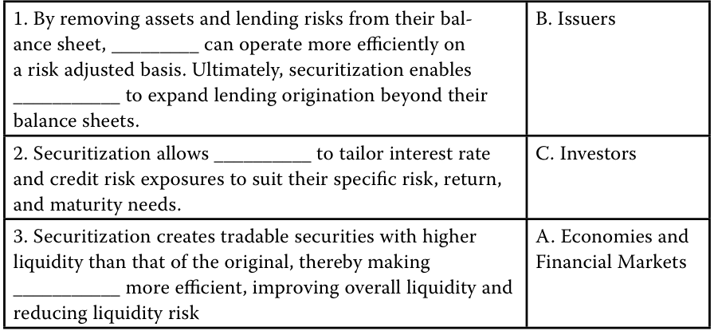
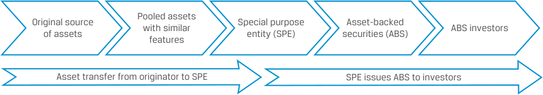
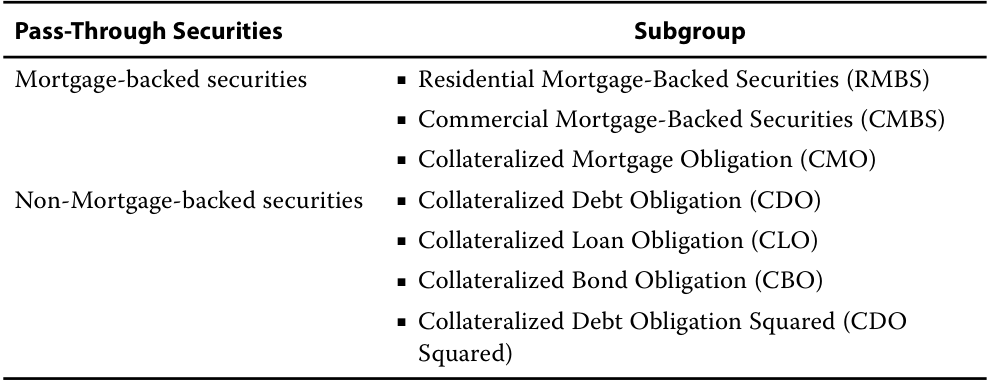
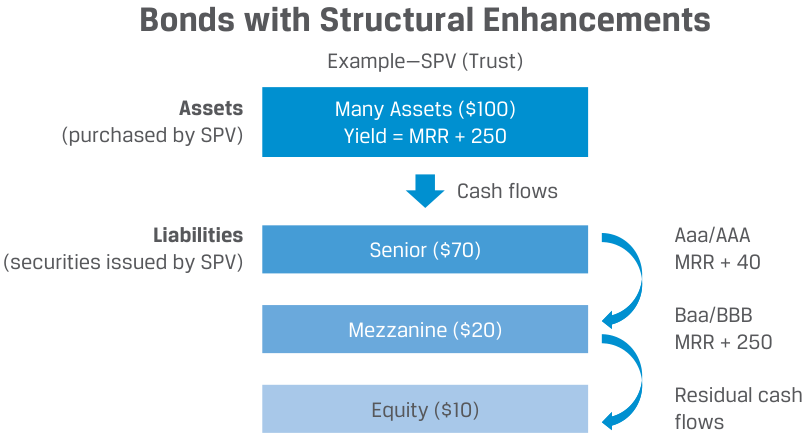
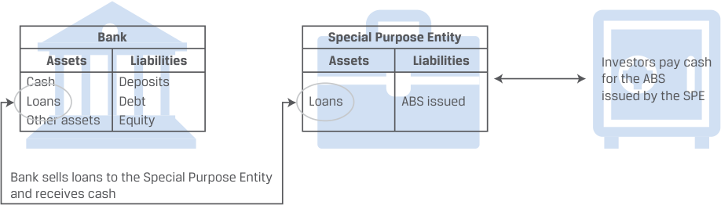

Learning Module 17 Fixed-Income Securitization - Part 1: Introduction
Volume 6: Fixed Income
Learning Module 17 Fixed-Income Securitization
Part 1/2: Introduction (PDF Pages 453–461)
Tập 6: Chứng Khoán Thu Nhập Cố Định (Fixed Income)
Học phần 17: Chứng Khoán Hóa Thu Nhập Cố Định (Fixed-Income Securitization)
Phần 1/2: Giới thiệu (Trang PDF 453–461)
L E A R N I N G M O D U L E 17
H Ọ C P H Ầ N 17
Fixed-Income Securitization
Chứng Khoán Hóa Thu Nhập Cố Định (Fixed-Income Securitization)
LEARNING OUTCOMES
MỤC TIÊU HỌC TẬP (LEARNING OUTCOMES)
Mastery The candidate should be able to: explain benefits of securitization for issuers, investors, economies, and financial markets describe securitization, including the parties and the roles they play
Mức độ thành thạo – Ứng viên cần có khả năng: - Giải thích lợi ích của chứng khoán hóa (securitization) đối với tổ chức phát hành (issuers), nhà đầu tư (investors), nền kinh tế và các thị trường tài chính. - Mô tả quy trình chứng khoán hóa, bao gồm các bên tham gia và vai trò của họ.
INTRODUCTION
GIỚI THIỆU (INTRODUCTION)
1
1
Asset-backed securities (ABS) are securities backed by and repaid from a pooled group of loans or receivables. Creating securities that are repaid from particular types of loans or receivables transfers risk, provides flexibility to issuers and investors, and efficiently allocates capital. In a securitization, cash flows from a designated pool of assets are redistributed by a special purpose issuer to pay interest and principal to investors in a predetermined manner. Thus, ABS transactions create an entire new subordination structure on the designated pool of assets. Securitization takes place around the world — in the Americas, Asia, and Europe. This first of three Fixed-Income Learning Modules describes the benefits of securitization, the securitization process, and typical securitization structures.
Chứng khoán đảm bảo bằng tài sản (Asset-backed securities – ABS) là các chứng khoán được đảm bảo và hoàn trả từ một nhóm tập hợp (pooled group) các khoản vay hoặc khoản phải thu (loans or receivables). Việc tạo ra các chứng khoán được hoàn trả từ các loại khoản vay hoặc khoản phải thu cụ thể giúp chuyển giao rủi ro, mang lại sự linh hoạt cho tổ chức phát hành và nhà đầu tư, đồng thời phân bổ vốn một cách hiệu quả. Trong một giao dịch chứng khoán hóa, dòng tiền từ một danh mục tài sản được chỉ định sẽ được phân phối lại bởi một tổ chức phát hành có mục đích đặc biệt (special purpose issuer) để thanh toán tiền lãi và nợ gốc cho các nhà đầu tư theo một phương thức đã được xác định trước. Do đó, các giao dịch ABS tạo ra một cấu trúc phân tầng thứ bậc ưu tiên (subordination structure) hoàn toàn mới trên danh mục tài sản được chỉ định. Chứng khoán hóa diễn ra trên khắp thế giới — tại châu Mỹ, châu Á và châu Âu. Học phần đầu tiên trong chuỗi ba Học phần về Thu nhập Cố định này mô tả những lợi ích của chứng khoán hóa, quy trình chứng khoán hóa và các cấu trúc chứng khoán hóa điển hình.
LEARNING MODULE OVERVIEW
TỔNG QUAN HỌC PHẦN (LEARNING MODULE OVERVIEW)
-
Securitization benefits investors by redistributing payment risks, enhancing the predictability of payments, diminishing the impact of unexpected changes in payment patterns (such as defaults, prepayments, or payment extensions), helping investors match risk, return and maturity needs, and reducing risk through various credit enhancements.
-
Securitization enables issuers to operate more efficiently on a risk-adjusted basis by removing assets and lending risks from their balance sheets (thereby reducing their leverage), expanding their capacity to originate loans and to secure lower funding costs.
-
Securitization enhances financial market efficiency, improving overall liquidity in the financial system and reducing liquidity risk.
-
Chứng khoán hóa mang lại lợi ích cho nhà đầu tư thông qua việc phân phối lại rủi ro thanh toán, nâng cao khả năng dự báo của các khoản thanh toán, giảm thiểu tác động của những thay đổi bất ngờ trong mô hình thanh toán (chẳng hạn như vỡ nợ (defaults), trả nợ trước hạn (prepayments) hoặc gia hạn thanh toán (payment extensions)), giúp nhà đầu tư kết hợp phù hợp nhu cầu về rủi ro, tỷ suất sinh lợi và kỳ hạn, đồng thời giảm thiểu rủi ro thông qua các biện pháp tăng cường tín dụng (credit enhancements) khác nhau.
-
Chứng khoán hóa cho phép các tổ chức phát hành hoạt động hiệu quả hơn trên cơ sở điều chỉnh theo rủi ro (risk-adjusted basis) bằng cách loại bỏ tài sản và rủi ro cho vay khỏi bảng cân đối kế toán của họ (từ đó làm giảm đòn bẩy tài chính), mở rộng năng lực khởi tạo khoản vay (originate loans) và tiếp cận chi phí huy động vốn thấp hơn.
-
Chứng khoán hóa nâng cao tính hiệu quả của thị trường tài chính, cải thiện thanh khoản tổng thể trong hệ thống tài chính và giảm thiểu rủi ro thanh khoản (liquidity risk).
-
Several parties participate in a securitization, including the original corporate issuers of the assets (for example, loans, receivables, leases, or debt) to be securitized; a special purpose entity (SPE) created to buy/own these corporate assets, create new assets from them, and sell the new assets to investors; the servicer of the underlying loans or debt; and other (third-party) entities (for example, accountants, attorneys, and underwriters).
-
When an original issuer elects to securitize assets, it first establishes an SPE to which it sells the assets. The SPE then issues and sells to investors securities backed by these assets. Interest and principal payments on the assets are used to pay the investors in the new securities.
-
The separate legal entity structure of the SPE is designed to protect the underlying assets from any claims by creditors of the issuer should the issuer go into financial distress. However, ABS investors should evaluate the legal considerations of the actual jurisdiction where they purchase an ABS, since legal frameworks vary by country.
-
Nhiều bên tham gia vào một giao dịch chứng khoán hóa, bao gồm các tổ chức phát hành doanh nghiệp ban đầu của các tài sản (ví dụ: các khoản vay, khoản phải thu, hợp đồng thuê hoặc khoản nợ) sẽ được chứng khoán hóa; một pháp nhân có mục đích đặc biệt (Special Purpose Entity – SPE) được thành lập để mua/sở hữu các tài sản doanh nghiệp này, tạo ra các tài sản mới từ chúng và bán các tài sản mới đó cho nhà đầu tư; tổ chức quản lý dịch vụ thu hộ khoản vay (servicer) của các khoản vay hoặc khoản nợ cơ sở; và các tổ chức (bên thứ ba) khác (ví dụ: kế toán viên, luật sư và tổ chức bảo lãnh phát hành (underwriters)).
-
Khi một tổ chức phát hành ban đầu quyết định chứng khoán hóa tài sản, trước tiên họ thành lập một SPE để bán tài sản cho pháp nhân đó. Sau đó, SPE phát hành và bán cho các nhà đầu tư các chứng khoán được đảm bảo bằng những tài sản này. Các khoản thanh toán lãi và gốc từ các tài sản cơ sở được sử dụng để chi trả cho các nhà đầu tư nắm giữ chứng khoán mới.
-
Cấu trúc pháp nhân độc lập của SPE được thiết kế nhằm bảo vệ các tài sản cơ sở khỏi bất kỳ quyền đòi nợ nào từ các chủ nợ của tổ chức phát hành trong trường hợp tổ chức phát hành rơi vào tình trạng kiệt quệ tài chính (financial distress). Tuy nhiên, các nhà đầu tư ABS cần đánh giá các khía cạnh pháp lý tại khu vực tài phán thực tế nơi họ mua ABS, vì khuôn khổ pháp lý có sự khác biệt giữa các quốc gia.
LEARNING MODULE SELF-ASSESSMENT
TỰ ĐÁNH GIÁ HỌC PHẦN (LEARNING MODULE SELF-ASSESSMENT)
These initial questions are intended to help you gauge your current level of understanding of this learning module.
Các câu hỏi ban đầu này nhằm giúp bạn tự đánh giá mức độ hiểu biết hiện tại của mình về học phần này.
- Which of the following asset-backed securities (ABS) is most complex?
-
A. Covered bonds
-
B. Pass-through securities
-
C. Collateralized mortgage obligations
-
Solution
- Loại chứng khoán đảm bảo bằng tài sản (Asset-backed securities – ABS) nào sau đây là phức tạp nhất?
-
A. Trái phiếu có bảo đảm (Covered bonds)
-
B. Chứng khoán chuyển tiếp dòng tiền (Pass-through securities)
-
C. Nghĩa vụ nợ thế chấp có tài sản đảm bảo (Collateralized mortgage obligations – CMO)
-
Lời giải (Solution)
C is correct. Collateralized mortgage obligations enhance the predictability of payment patterns of pass-through securities by redistributing the cash flows in the pool across the different tranches according to a preset schedule. A is incorrect because covered bonds are the simplest securitization structure. The issuer segregates (but retains) the underlying loans/assets and then uses the segregated loans/assets as collateral for the covered bonds it issues. B is incorrect because pass-through securities, while true securitizations (meaning that the pool of assets is removed from the balance sheet and transferred into a separate and independent legal entity), are not as complex as collateralized mortgage obligations.
C là đáp án đúng. Nghĩa vụ nợ thế chấp có tài sản đảm bảo (Collateralized mortgage obligations – CMO) nâng cao khả năng dự báo của mô hình thanh toán ở chứng khoán chuyển tiếp dòng tiền (pass-through securities) bằng cách phân phối lại dòng tiền trong danh mục qua các phần/lớp chứng khoán (tranches) khác nhau theo một lịch trình thiết lập trước. A không đúng vì trái phiếu có bảo đảm (covered bonds) là cấu trúc chứng khoán hóa đơn giản nhất. Tổ chức phát hành tách biệt (nhưng vẫn giữ lại) các khoản vay/tài sản cơ sở và sau đó sử dụng các khoản vay/tài sản được tách biệt đó làm tài sản thế chấp (collateral) cho các trái phiếu có bảo đảm mà họ phát hành. B không đúng vì chứng khoán chuyển tiếp dòng tiền (pass-through securities), mặc dù là chứng khoán hóa thực sự (nghĩa là danh mục tài sản được loại bỏ khỏi bảng cân đối kế toán và chuyển giao sang một pháp nhân độc lập và tách biệt), vẫn không phức tạp bằng nghĩa vụ nợ thế chấp có tài sản đảm bảo (CMO).
- Which of the following legal documents in the securitization process describes the structure of the securitization, including the priority of payments and the credit enhancements to be used?
-
A. Prospectus
-
B. Notes issued by the SPE
-
C. Purchase agreement between the seller of the collateral and the SPE
-
Solution
- Tài liệu pháp lý nào sau đây trong quy trình chứng khoán hóa mô tả cấu trúc của giao dịch chứng khoán hóa, bao gồm thứ tự ưu tiên thanh toán (priority of payments) và các biện pháp tăng cường tín dụng (credit enhancements) sẽ được sử dụng?
-
A. Bản cáo bạch (Prospectus)
-
B. Trái phiếu/kỳ phiếu do SPE phát hành (Notes issued by the SPE)
-
C. Hợp đồng mua bán (Purchase agreement) giữa bên bán tài sản thế chấp và SPE
-
Lời giải (Solution)
The correct answer is A. The prospectus describes the structure of the securitization, including the priority and amount of payments to be made to the servicer, administrators, and the ABS holders, as well as the credit enhancements used in the securitization. B is incorrect because the notes issued by the SPE are the actual asset-backed-securities (ABS), not legal documents
Đáp án đúng là A. Bản cáo bạch (prospectus) mô tả cấu trúc của giao dịch chứng khoán hóa, bao gồm thứ tự ưu tiên và số tiền thanh toán sẽ được chi trả cho tổ chức quản lý dịch vụ thu hộ (servicer), các nhà quản trị (administrators), và những người nắm giữ ABS, cũng như các biện pháp tăng cường tín dụng được sử dụng trong giao dịch chứng khoán hóa. B không đúng vì các trái phiếu/kỳ phiếu do SPE phát hành chính là các chứng khoán đảm bảo bằng tài sản (ABS) thực tế, chứ không phải là tài liệu pháp lý
supporting the securitization process. C is incorrect because the purchase agreement between the seller of the collateral and the SPE outlines the representations and warranties that the seller makes about the assets sold.
hỗ trợ cho quy trình chứng khoán hóa. C không đúng vì hợp đồng mua bán (purchase agreement) giữa bên bán tài sản thế chấp và SPE nêu rõ các cam đoan và bảo đảm (representations and warranties) mà bên bán đưa ra về các tài sản được bán.
- Identify the role that corresponds to each of the following participants in a securitization:
- Xác định vai trò tương ứng với từng bên tham gia sau đây trong một giao dịch chứng khoán hóa:
| 1. Seller | A. The entitythat issues the ABS |
|---|---|
| 2. Servicer | h B. The entity that wishes to increase liquidity, lower funding |
| h costs, and operate more efficientlyon a risk-adjusted basis |
|
| 3. SPE | fi C. The entity that collects payments from borrowers |
| Bên tham gia | Vai trò |
|---|---|
| 1. Bên bán (Seller) | A. Pháp nhân phát hành ABS |
| 2. Tổ chức quản lý dịch vụ thu hộ (Servicer) | B. Pháp nhân mong muốn tăng thanh khoản, giảm chi phí huy động vốn và hoạt động hiệu quả hơn trên cơ sở điều chỉnh theo rủi ro |
| 3. Pháp nhân có mục đích đặc biệt (SPE) | C. Pháp nhân thu tiền thanh toán từ những người đi vay |
Solution
Lời giải (Solution)
1. B is correct. By removing assets and lending risks from their balance sheet, the seller can operate more efficiently on a risk-adjusted basis. And, by selling the assets to an SPE, investors can rely on the default risk associated with collecting payments from customers, rather than the seller’s credit quality and default risk. As a result, in aggregate, the funding cost of a securitization may be lower than that of a corporate bond issue.
1. B là đáp án đúng. Bằng cách loại bỏ tài sản và rủi ro cho vay khỏi bảng cân đối kế toán, bên bán (seller) có thể hoạt động hiệu quả hơn trên cơ sở điều chỉnh theo rủi ro. Đồng thời, bằng cách bán tài sản cho một SPE, các nhà đầu tư có thể dựa vào rủi ro vỡ nợ gắn liền với việc thu tiền thanh toán từ khách hàng, thay vì chất lượng tín dụng và rủi ro vỡ nợ của chính bên bán. Kết quả là, xét trên tổng thể, chi phí huy động vốn của một giao dịch chứng khoán hóa có thể thấp hơn so với việc phát hành trái phiếu doanh nghiệp.
2. C is correct. Loan servicing refers to administering any aspect of a loan, including collecting payments from borrowers, notifying borrowers who may be delinquent, and recovering and disposing of the underlying asset if the borrower does not make the payments as scheduled.
2. C là đáp án đúng. Dịch vụ quản lý khoản vay (loan servicing) đề cập đến việc quản trị mọi khía cạnh của khoản vay, bao gồm thu tiền thanh toán từ người đi vay, thông báo cho những người đi vay có thể bị quá hạn thanh toán (delinquent), cũng như thu hồi và thanh lý tài sản cơ sở nếu người đi vay không thực hiện thanh toán theo đúng lịch trình.
3. A is correct. The SPE purchases the assets from the seller and then issues and sells ABS backed by the pool of securitized assets.
3. A là đáp án đúng. SPE mua lại các tài sản từ bên bán và sau đó phát hành cũng như bán ABS được đảm bảo bằng danh mục tài sản đã được chứng khoán hóa.
- Identify the benefit of securitization that corresponds most closely to each of the following parties: (A. Economies and Financial Markets, B. Issuers, C. Investors):
- Xác định lợi ích của chứng khoán hóa tương ứng gần nhất với từng bên sau đây: (A. Nền kinh tế và Thị trường Tài chính (Economies and Financial Markets), B. Tổ chức phát hành (Issuers), C. Nhà đầu tư (Investors)):
| 1. By removing assets and lending risks from their bal- ance sheet, ___ can operate more efficiently on a risk adjusted basis. Ultimately, securitization enables _____ to expand lending origination beyond their balance sheets. |
|---|
| 2. Securitization allows ____ to tailor interest rate and credit risk exposures to suit their specific risk, return, and maturityneeds. |
| 3. Securitization creates tradable securities with higher liquidity than that of the original, thereby making _____ more efficient, improving overall liquidity and reducingliquidityrisk |
| Mô tả lợi ích |
|---|
| 1. Bằng cách loại bỏ tài sản và rủi ro cho vay khỏi bảng cân đối kế toán, ___ có thể hoạt động hiệu quả hơn trên cơ sở điều chỉnh theo rủi ro. Cuối cùng, chứng khoán hóa cho phép _____ mở rộng hoạt động khởi tạo cho vay vượt ra ngoài quy mô bảng cân đối kế toán của họ. |
| 2. Chứng khoán hóa cho phép ____ tùy chỉnh mức độ tiếp xúc rủi ro lãi suất và rủi ro tín dụng sao cho phù hợp với nhu cầu cụ thể về rủi ro, tỷ suất sinh lợi và kỳ hạn của họ. |
| 3. Chứng khoán hóa tạo ra các chứng khoán có thể giao dịch với tính thanh khoản cao hơn so với tài sản gốc ban đầu, qua đó làm cho _____ hiệu quả hơn, cải thiện thanh khoản tổng thể và giảm thiểu rủi ro thanh khoản. |
Solution
Lời giải (Solution)

Chú thích hình ảnh: 1. Bằng cách loại bỏ tài sản và rủi ro cho vay khỏi bảng cân đối kế toán... → B. Tổ chức phát hành (Issuers) 2. Chứng khoán hóa cho phép tùy chỉnh mức độ tiếp xúc rủi ro lãi suất và rủi ro tín dụng... → C. Nhà đầu tư (Investors) 3. Chứng khoán hóa tạo ra các chứng khoán có thể giao dịch với tính thanh khoản cao hơn... → A. Nền kinh tế và Thị trường Tài chính (Economies and Financial Markets)
1. B is correct. By removing assets and lending risks from their balance sheet, issuers can operate more efficiently on a risk adjusted basis. Ultimately, securitization enables issuers to expand lending origination beyond their balance sheets.
1. B là đáp án đúng. Bằng cách loại bỏ tài sản và rủi ro cho vay khỏi bảng cân đối kế toán, các tổ chức phát hành (issuers) có thể hoạt động hiệu quả hơn trên cơ sở điều chỉnh theo rủi ro. Cuối cùng, chứng khoán hóa cho phép các tổ chức phát hành mở rộng hoạt động khởi tạo cho vay vượt ra ngoài quy mô bảng cân đối kế toán của họ.
2. C is correct. Securitization allows investors to tailor interest rate and credit risk exposures to suit their specific risk, return, and maturity needs.
2. C là đáp án đúng. Chứng khoán hóa cho phép các nhà đầu tư (investors) tùy chỉnh mức độ tiếp xúc rủi ro lãi suất và rủi ro tín dụng sao cho phù hợp với nhu cầu cụ thể về rủi ro, tỷ suất sinh lợi và kỳ hạn của họ.
3. A is correct. Securitization creates tradable securities with higher liquidity than that of the original, thereby making economies and financial markets more efficient, improving overall liquidity and reducing liquidity risk.
3. A là đáp án đúng. Chứng khoán hóa tạo ra các chứng khoán có thể giao dịch với tính thanh khoản cao hơn so với tài sản gốc ban đầu, qua đó làm cho các nền kinh tế và thị trường tài chính (economies and financial markets) hiệu quả hơn, cải thiện thanh khoản tổng thể và giảm thiểu rủi ro thanh khoản.
2
2
THE BENEFITS OF SECURITIZATION
LỢI ÍCH CỦA CHỨNG KHOÁN HÓA (THE BENEFITS OF SECURITIZATION)
explain benefits of securitization for issuers, investors, economies, and financial markets
Mục tiêu học tập: Giải thích lợi ích của chứng khoán hóa đối với tổ chức phát hành, nhà đầu tư, nền kinh tế và các thị trường tài chính.
The securitization process pools and transfers the ownership of cash flow generating assets, such as loans or receivables, from the original lender into a specially created legal entity. The pool of assets are the securitized assets, also called the reference portfolio or collateral. In turn, that legal entity issues securities backed by these pooled assets to investors and uses the cash flows to pay interest and repay the principal to investors. Securitization creates a direct link between investors and borrowers for many types of loans and receivables, and it provides benefits for issuers and investors as well as economies and financial markets. The steps of the securitization process are outlined in Exhibit 1.
Quy trình chứng khoán hóa tập hợp (pools) và chuyển giao quyền sở hữu các tài sản tạo ra dòng tiền (cash flow generating assets), chẳng hạn như các khoản vay hoặc khoản phải thu, từ bên cho vay ban đầu sang một pháp nhân được thành lập đặc biệt. Danh mục tập hợp các tài sản này được gọi là tài sản chứng khoán hóa (securitized assets), hay còn gọi là danh mục tham chiếu (reference portfolio) hoặc tài sản thế chấp (collateral). Đến lượt mình, pháp nhân đó phát hành các chứng khoán được đảm bảo bằng các tài sản tập hợp này cho nhà đầu tư và sử dụng dòng tiền thu được để thanh toán tiền lãi và hoàn trả nợ gốc cho nhà đầu tư. Chứng khoán hóa tạo ra mối liên kết trực tiếp giữa nhà đầu tư và người đi vay đối với nhiều loại khoản vay và khoản phải thu khác nhau, đồng thời mang lại lợi ích cho tổ chức phát hành, nhà đầu tư cũng như các nền kinh tế và thị trường tài chính. Các bước của quy trình chứng khoán hóa được phác thảo trong Bảng minh họa 1 (Exhibit 1).
Exhibit 1: The Securitization Process
Bảng minh họa 1: Quy trình Chứng khoán hóa (Exhibit 1: The Securitization Process)

Chú thích hình ảnh: - Original source of assets: Nguồn tài sản ban đầu → Pooled assets with similar features: Các tài sản có đặc điểm tương đồng được tập hợp lại → (Chuyển giao tài sản từ tổ chức khởi tạo sang SPE) → Special purpose entity (SPE): Pháp nhân có mục đích đặc biệt (SPE) → (SPE phát hành ABS cho nhà đầu tư) → Asset-backed securities (ABS): Chứng khoán đảm bảo bằng tài sản (ABS) → ABS investors: Nhà đầu tư ABS.
There are several different types of securitized products. In order of increasing complexity, the following products are examples of ABS.
Có nhiều loại sản phẩm chứng khoán hóa khác nhau. Theo thứ tự mức độ phức tạp tăng dần, các sản phẩm sau đây là những ví dụ về ABS:
-
Covered bonds are the simplest securitization structure. The issuers, mainly European banks, create a specific pool of mortgage loans on the balance sheet of the bank and segregate it from other bank assets. This pool then serves as collateral (“cover”) for bonds issued by the bank. Should the issuing bank default on a covered bond issue, investors can use the collateral underlying the pool to receive payment. Covered bonds are not considered full securitizations because the underlying assets are not transferred to a separate independent SPE but rather remain on the issuing bank’s balance sheet. Moreover, covered bond investors receive payment directly from the bank and not from the cash flow generated by the specific pool of mortgage loans.
-
Pass-through securities are true securitizations: The specific pool of assets is removed from the balance sheet and transferred into a separate and independent legal entity. That legal entity then issues securities backed by these pooled assets. The investors in these securities receive the principal and interest payments from the assets (often loans) in the pool as they are “passed through” the legal entity. Pass-through securities pass through the payments proportionally across the different tranches and redistribute the payment risks to investors seeking differing levels of risk exposures. The payments investors receive vary and depend directly on the overall credit risk of the pool and payment patterns.
-
Bonds with structural enhancements enhance the predictability of payment patterns of pass-through securities by redistributing the cash flows in the pool across specified tranches according to a preset schedule. The set payment schedule mitigates the impact of unexpected changes in payment patterns, such as defaults, prepayments, or extended repayment periods. Additionally, tranches are subordinated with lower tranches assuming greater risks of defaults and changes in repayment patterns than higher tranches. They may further mitigate and redistribute the potential credit risk of a risky pool of securitized loans by adding various types of credit enhancements to further reduce the risk investors are exposed to.
-
Mortgage-backed securities (MBS) are ABS backed by a pool of mortgages. A distinction is sometimes made between MBS and ABS backed by non-mortgage assets. This distinction is common in the United States and is shown in Exhibit 2.
-
Trái phiếu có bảo đảm (Covered bonds) là cấu trúc chứng khoán hóa đơn giản nhất. Các tổ chức phát hành, chủ yếu là các ngân hàng châu Âu, tạo ra một danh mục cụ thể gồm các khoản vay thế chấp trên bảng cân đối kế toán của ngân hàng và tách biệt (segregate) nó khỏi các tài sản khác của ngân hàng. Danh mục này sau đó đóng vai trò là tài sản thế chấp ("bảo đảm" – cover) cho các trái phiếu do ngân hàng phát hành. Trong trường hợp ngân hàng phát hành vỡ nợ đối với đợt phát hành trái phiếu có bảo đảm, các nhà đầu tư có thể sử dụng tài sản thế chấp cơ sở của danh mục này để nhận thanh toán. Trái phiếu có bảo đảm không được coi là chứng khoán hóa toàn phần (full securitizations) bởi vì các tài sản cơ sở không được chuyển giao sang một SPE độc lập tách biệt mà vẫn nằm trên bảng cân đối kế toán của ngân hàng phát hành. Hơn nữa, nhà đầu tư trái phiếu có bảo đảm nhận thanh toán trực tiếp từ ngân hàng chứ không phải từ dòng tiền tạo ra bởi danh mục các khoản vay thế chấp cụ thể đó.
-
Chứng khoán chuyển tiếp dòng tiền (Pass-through securities) là các giao dịch chứng khoán hóa thực sự (true securitizations): Danh mục tài sản cụ thể được loại bỏ khỏi bảng cân đối kế toán và chuyển giao sang một pháp nhân độc lập và tách biệt. Pháp nhân đó sau đó phát hành các chứng khoán được đảm bảo bằng các tài sản tập hợp này. Các nhà đầu tư vào những chứng khoán này nhận các khoản thanh toán gốc và lãi từ các tài sản (thường là các khoản vay) trong danh mục khi chúng được "chuyển tiếp" (passed through) qua pháp nhân đó. Chứng khoán chuyển tiếp dòng tiền chuyển tiếp các khoản thanh toán theo tỷ lệ tương ứng qua các lớp chứng khoán (tranches) khác nhau và phân phối lại rủi ro thanh toán cho các nhà đầu tư đang tìm kiếm các mức độ tiếp xúc rủi ro khác nhau. Các khoản thanh toán mà nhà đầu tư nhận được sẽ biến đổi và phụ thuộc trực tiếp vào rủi ro tín dụng tổng thể của danh mục cũng như mô hình thanh toán.
-
Trái phiếu có tăng cường cấu trúc (Bonds with structural enhancements) nâng cao khả năng dự báo của mô hình thanh toán ở chứng khoán chuyển tiếp dòng tiền bằng cách phân phối lại dòng tiền trong danh mục qua các lớp chứng khoán (tranches) được chỉ định theo một lịch trình thiết lập trước. Lịch trình thanh toán cố định này làm giảm thiểu tác động của những thay đổi bất ngờ trong mô hình thanh toán, chẳng hạn như vỡ nợ (defaults), trả nợ trước hạn (prepayments), hoặc kéo dài thời gian trả nợ (extended repayment periods). Ngoài ra, các lớp chứng khoán được phân tầng thứ bậc ưu tiên (subordinated), trong đó các lớp cấp thấp hơn (lower tranches) gánh chịu rủi ro vỡ nợ và rủi ro thay đổi mô hình trả nợ lớn hơn so với các lớp cấp cao hơn (higher tranches). Chúng có thể tiếp tục giảm thiểu và phân phối lại rủi ro tín dụng tiềm ẩn của một danh mục các khoản vay chứng khoán hóa nhiều rủi ro bằng cách bổ sung nhiều hình thức tăng cường tín dụng (credit enhancements) khác nhau nhằm giảm hơn nữa rủi ro mà nhà đầu tư phải đối mặt.
-
Chứng khoán đảm bảo bằng thế chấp (Mortgage-backed securities – MBS) là các chứng khoán ABS được đảm bảo bằng một danh mục các khoản vay thế chấp bất động sản (mortgages). Đôi khi người ta phân biệt giữa MBS và ABS được đảm bảo bằng các tài sản phi thế chấp (non-mortgage assets). Sự phân biệt này rất phổ biến tại Hoa Kỳ và được thể hiện trong Bảng minh họa 2 (Exhibit 2).
Exhibit 2: Pass-Through Securities
Bảng minh họa 2: Chứng khoán chuyển tiếp dòng tiền (Exhibit 2: Pass-Through Securities)

Chú thích hình ảnh: - Pass-Through Securities (Chứng khoán chuyển tiếp dòng tiền) vs. Subgroup (Phân nhóm): - Mortgage-backed securities (Chứng khoán đảm bảo bằng thế chấp – MBS): - Chứng khoán đảm bảo bằng thế chấp nhà ở (Residential Mortgage-Backed Securities – RMBS) - Chứng khoán đảm bảo bằng thế chấp thương mại (Commercial Mortgage-Backed Securities – CMBS) - Nghĩa vụ nợ thế chấp có tài sản đảm bảo (Collateralized Mortgage Obligation – CMO) - Non-Mortgage-backed securities (Chứng khoán đảm bảo bằng tài sản phi thế chấp): - Nghĩa vụ nợ có tài sản đảm bảo (Collateralized Debt Obligation – CDO) - Nghĩa vụ khoản vay có tài sản đảm bảo (Collateralized Loan Obligation – CLO) - Nghĩa vụ trái phiếu có tài sản đảm bảo (Collateralized Bond Obligation – CBO) - Nghĩa vụ nợ có tài sản đảm bảo bậc hai (Collateralized Debt Obligation Squared – CDO Squared)
Exhibit 3: Securitization Structure and Tranche Cash Flows
Bảng minh họa 3: Cấu trúc Chứng khoán hóa và Dòng tiền của các Lớp chứng khoán (Exhibit 3: Securitization Structure and Tranche Cash Flows)

Chú thích hình ảnh: - Bonds with Structural Enhancements (Trái phiếu có tăng cường cấu trúc) — Ví dụ: SPV (Quỹ tín thác – Trust): - Tài sản (Assets – được mua bởi SPV): Nhiều tài sản (\$100), Lợi suất (Yield) = MRR + 250 bps → Dòng tiền (Cash flows) → - Nợ phải trả (Liabilities – chứng khoán phát hành bởi SPV): - Lớp ưu tiên cấp cao (Senior – \$70): Xếp hạng Aaa/AAA, lãi suất MRR + 40 bps - Lớp trung gian (Mezzanine – \$20): Xếp hạng Baa/BBB, lãi suất MRR + 250 bps - Lớp vốn cổ phần (Equity – \$10): Hưởng dòng tiền còn lại (Residual cash flows)
Subordination , or tranching, in the securitization transaction involves creating more than one bond class or tranche, and the bond classes differ in how they receive cash flows from the underlying pool of assets. The bond classes are classified as senior bond classes or subordinated bond classes, and this structure is also referred to as a senior/subordinated structure as seen in Exhibit 3. The subordinated bond classes are sometimes called “non-senior bond classes” or “junior bond classes.” Since all investors in a securitization are paid from the same underlying cash flow pool, the tranching dictates the order of payments made to investors and the order in which losses are absorbed by the investors.
Sự phân tầng thứ bậc ưu tiên (Subordination), hay phân lớp chứng khoán (tranching), trong giao dịch chứng khoán hóa bao gồm việc tạo ra nhiều hơn một hạng trái phiếu (bond class) hay lớp chứng khoán (tranche), và các hạng trái phiếu này khác nhau ở cách thức chúng nhận dòng tiền từ danh mục tài sản cơ sở. Các hạng trái phiếu được phân loại thành các hạng trái phiếu cấp cao (senior bond classes) hoặc các hạng trái phiếu cấp thấp (subordinated bond classes), và cấu trúc này còn được gọi là cấu trúc cấp cao/cấp thấp (senior/subordinated structure) như được thấy trong Bảng minh họa 3. Các hạng trái phiếu cấp thấp đôi khi được gọi là "các hạng trái phiếu không ưu tiên (non-senior bond classes)" hoặc "các hạng trái phiếu thứ cấp (junior bond classes)". Vì tất cả các nhà đầu tư trong một giao dịch chứng khoán hóa đều được thanh toán từ cùng một danh mục dòng tiền cơ sở, nên việc phân lớp chứng khoán (tranching) sẽ quy định thứ tự thanh toán cho các nhà đầu tư cũng như thứ tự mà các khoản lỗ được hấp thụ bởi các nhà đầu tư.
Benefits to Issuers
Lợi ích đối với Tổ chức phát hành (Benefits to Issuers)
Traditionally, banks underwrite loans to allow borrowers to finance various purchases and direct investments. These bank loans, which typically remain on the balance sheet of the bank until the loans are fully repaid, are relatively illiquid.
Theo truyền thống, các ngân hàng thẩm định và cấp các khoản vay (underwrite loans) để cho phép người đi vay tài trợ cho các giao dịch mua sắm và đầu tư trực tiếp khác nhau. Các khoản vay ngân hàng này, vốn thường nằm lại trên bảng cân đối kế toán của ngân hàng cho đến khi được hoàn trả đầy đủ, có tính thanh khoản tương đối thấp (illiquid).
Banks act as the intermediary between borrowers and investors. If they can separate loan origination from loan financing, they can improve their profitability, earning origination fees and reducing capital requirements for loans that are sold to investors, as shown in Exhibit 4. As we learned in the example on asset-backed commercial paper (ABCP) in an earlier learning module, by removing assets and lending risks
Ngân hàng đóng vai trò là trung gian giữa người đi vay và nhà đầu tư. Nếu có thể tách rời hoạt động khởi tạo khoản vay (loan origination) khỏi hoạt động tài trợ khoản vay (loan financing), ngân hàng có thể cải thiện khả năng sinh lời, thu phí khởi tạo khoản vay (origination fees) và giảm yêu cầu vốn pháp định (capital requirements) đối với các khoản vay đã được bán cho nhà đầu tư, như thể hiện trong Bảng minh họa 4. Như chúng ta đã tìm hiểu trong ví dụ về thương phiếu đảm bảo bằng tài sản (Asset-backed commercial paper – ABCP) ở học phần trước, bằng cách loại bỏ tài sản và rủi ro cho vay
from their balance sheet, banks sell illiquid assets and operate more efficiently on a risk-adjusted basis. Selling assets also generates fee income. Ultimately, securitization enables banks to expand lending origination beyond their balance sheets.
khỏi bảng cân đối kế toán của mình, các ngân hàng bán đi những tài sản kém thanh khoản và hoạt động hiệu quả hơn trên cơ sở điều chỉnh theo rủi ro. Việc bán tài sản cũng tạo ra thu nhập từ phí (fee income). Cuối cùng, chứng khoán hóa cho phép các ngân hàng mở rộng hoạt động khởi tạo cho vay vượt ra ngoài quy mô bảng cân đối kế toán của mình.
Exhibit 4: Banks and Securitization
Bảng minh họa 4: Ngân hàng và Chứng khoán hóa (Exhibit 4: Banks and Securitization)

Chú thích hình ảnh: - Ngân hàng (Bank): Tài sản (Assets: Tiền mặt – Cash, Khoản vay – Loans, Tài sản khác – Other assets) | Nguồn vốn (Liabilities: Tiền gửi – Deposits, Nợ – Debt, Vốn chủ sở hữu – Equity). - (Ngân hàng bán các khoản vay cho Pháp nhân có mục đích đặc biệt (SPE) và nhận tiền mặt) - Pháp nhân có mục đích đặc biệt (Special Purpose Entity – SPE): Tài sản (Assets: Các khoản vay – Loans) | Nợ phải trả (Liabilities: ABS được phát hành – ABS issued). - (Các nhà đầu tư trả tiền mặt để mua ABS do SPE phát hành)
Without ABS as an investment instrument, investors wanting to gain exposure to private debts would have to directly underwrite loans, hold some combination of bank debt and common equity, or purchase loans from bank outright. Direct debt underwriting requires specialized skills in credit evaluation, origination, underwriting, and servicing, and one has to assume the operational costs and business risks of banking. ABS investment breaks down the wide range of skills and risks and redistributes them to appropriate parties.
Nếu không có ABS làm công cụ đầu tư, các nhà đầu tư muốn tiếp xúc với các khoản nợ tư nhân sẽ phải trực tiếp thẩm định và cấp khoản vay, nắm giữ một sự kết hợp nào đó giữa nợ ngân hàng và cổ phiếu phổ thông của ngân hàng, hoặc mua đứt các khoản vay trực tiếp từ ngân hàng. Việc trực tiếp thẩm định cho vay đòi hỏi các kỹ năng chuyên môn về đánh giá tín dụng, khởi tạo, thẩm định bảo lãnh và quản lý dịch vụ thu hộ khoản vay, đồng thời phải gánh chịu các chi phí hoạt động và rủi ro kinh doanh của ngành ngân hàng. Đầu tư vào ABS giúp phân tách phạm vi rộng lớn các kỹ năng và rủi ro này, rồi phân phối lại chúng cho các bên phù hợp.
Benefits to Investors
Lợi ích đối với Nhà đầu tư (Benefits to Investors)
Securitization provides a direct conduit between borrowers and investors, allowing investors to tailor interest rate and credit risk exposures to suit their specific risk, return, and maturity needs. Securitization transactions allow issuers to design risk– return characteristics to satisfy the risk tolerance of investors.
Chứng khoán hóa cung cấp một kênh dẫn truyền trực tiếp (direct conduit) giữa người đi vay và nhà đầu tư, cho phép nhà đầu tư tùy chỉnh mức độ tiếp xúc rủi ro lãi suất và rủi ro tín dụng sao cho phù hợp với nhu cầu cụ thể về rủi ro, tỷ suất sinh lợi và kỳ hạn của họ. Các giao dịch chứng khoán hóa cho phép tổ chức phát hành thiết kế các đặc tính rủi ro – tỷ suất sinh lợi nhằm đáp ứng mức độ chấp nhận rủi ro (risk tolerance) của các nhà đầu tư.
Although few institutional or individual investors have the specialized resources and expertise needed to originate, monitor, and collect the payments from the underlying loans and receivables, many can invest in securities backed by such loans or receivables. The ABS that are created by pooling these loans and receivables have characteristics similar to those of a standard bond.
Mặc dù rất ít nhà đầu tư tổ chức hoặc cá nhân có đủ nguồn lực chuyên biệt và chuyên môn cần thiết để khởi tạo, giám sát và thu hồi các khoản thanh toán từ các khoản vay và khoản phải thu cơ sở, nhưng nhiều nhà đầu tư có thể đầu tư vào các chứng khoán được đảm bảo bằng các khoản vay hoặc khoản phải thu đó. Các chứng khoán ABS được tạo ra bằng cách tập hợp các khoản vay và khoản phải thu này có những đặc điểm tương tự như một trái phiếu tiêu chuẩn.
For example, a pension fund with a long-term horizon can use securitized debt to achieve higher returns, match asset maturities to anticipated liability payout dates, and increase diversity in its asset pool while maintaining the option to adjust holdings quickly and cost-effectively. Thus, holding securitized debt helps pension fund investors increase exposure to the risk–return characteristics of a wider range of underlying assets.
Ví dụ, một quỹ hưu trí (pension fund) với tầm nhìn đầu tư dài hạn có thể sử dụng nợ chứng khoán hóa để đạt được tỷ suất sinh lợi cao hơn, khớp kỳ hạn tài sản với các ngày chi trả nghĩa vụ nợ dự kiến, và tăng tính đa dạng hóa trong danh mục tài sản của mình trong khi vẫn duy trì quyền chọn điều chỉnh danh mục nắm giữ một cách nhanh chóng và tiết kiệm chi phí. Do đó, việc nắm giữ nợ chứng khoán hóa giúp các nhà đầu tư quỹ hưu trí gia tăng mức độ tiếp xúc với các đặc tính rủi ro – tỷ suất sinh lợi của một phạm vi tài sản cơ sở rộng lớn hơn.
EXAMPLE 1
VÍ DỤ 1 (EXAMPLE 1)
Benefits of Securitized Debt for Long-term Investors
Lợi ích của Nợ Chứng khoán hóa đối với Nhà đầu tư Dài hạn (Benefits of Securitized Debt for Long-term Investors)
Pawas Singhvi, an investment manager for a defined benefit pension fund at a large manufacturer, is discussing investment options and expectations with a new associate, Kevin Epstein. Epstein asks why Singhvi holds a significant portion of fund assets in securitized debt. Singhvi explains that a number of parameters and expectations influence the investments selected for the pension fund, starting with asset and income diversification. The fund seeks safe, diversified assets and income streams, which offer low risk. Anticipated pension payments or outflows
Pawas Singhvi, nhà quản lý đầu tư cho một quỹ hưu trí có mức hưởng xác định (defined benefit pension fund) tại một công ty sản xuất lớn, đang thảo luận về các lựa chọn và kỳ vọng đầu tư với một cộng sự mới, Kevin Epstein. Epstein hỏi tại sao Singhvi lại nắm giữ một tỷ trọng đáng kể tài sản của quỹ dưới dạng nợ chứng khoán hóa. Singhvi giải thích rằng có một số tham số và kỳ vọng ảnh hưởng đến các khoản đầu tư được lựa chọn cho quỹ hưu trí, bắt đầu từ việc đa dạng hóa tài sản và thu nhập. Quỹ tìm kiếm các tài sản và dòng thu nhập an toàn, đa dạng hóa với mức rủi ro thấp. Các khoản chi trả lương hưu dự kiến hoặc dòng tiền chi ra
from the fund drive the need for liquid and stable investments, which mature or can be sold easily to match the timing of required cash outflows. Any fund investments must be highly rated.
từ quỹ thúc đẩy nhu cầu đối với các khoản đầu tư có tính thanh khoản cao và ổn định, có kỳ hạn đáo hạn hoặc có thể bán đi dễ dàng để khớp với thời điểm của các dòng tiền chi ra bắt buộc. Bất kỳ khoản đầu tư nào của quỹ cũng phải có xếp hạng tín nhiệm cao (highly rated).
Because pension payouts take place over many years into the future, pension assets must be invested long-term, too. And the fund’s assets must grow over time in order to produce promised pension payments at the levels required in the future. While public, government-issued debt is highly rated and typically safe, it alone may not produce sufficient returns to meet future obligations. By contrast, holding investment-grade, publicly traded, securitized debt, which can be traded, allows us to garner higher returns and to respond quickly to changes in market sentiment, risk sensitivity, or funding needs at low transaction costs.
Bởi vì các khoản chi trả lương hưu diễn ra trong nhiều năm tới trong tương lai, nên tài sản của quỹ hưu trí cũng phải được đầu tư trong dài hạn. Và tài sản của quỹ phải tăng trưởng theo thời gian để tạo ra các khoản chi trả lương hưu đã cam kết ở mức độ yêu cầu trong tương lai. Mặc dù nợ công do chính phủ phát hành có xếp hạng tín nhiệm cao và thường an toàn, nhưng chỉ riêng công cụ này có thể không tạo ra đủ tỷ suất sinh lợi để đáp ứng các nghĩa vụ trong tương lai. Ngược lại, việc nắm giữ nợ chứng khoán hóa thuộc nhóm đầu tư (investment-grade), được giao dịch công khai và có thể mua bán trên thị trường, cho phép chúng ta thu được tỷ suất sinh lợi cao hơn và phản ứng nhanh chóng trước những thay đổi trong tâm lý thị trường, mức độ nhạy cảm với rủi ro, hoặc nhu cầu thanh toán với chi phí giao dịch thấp.
Benefits to Economies and Financial Markets
Lợi ích đối với Nền kinh tế và Thị trường Tài chính (Benefits to Economies and Financial Markets)
Securitization creates tradable securities with higher liquidity than that of the original loans on the bank’s balance sheet, and trading securities in the secondary market allows investors to determine equilibrium prices—thereby making financial markets more efficient. Securitization also improves overall liquidity in the financial system and reduces liquidity risk.
Chứng khoán hóa tạo ra các chứng khoán có thể giao dịch với tính thanh khoản cao hơn so với các khoản vay gốc ban đầu nằm trên bảng cân đối kế toán của ngân hàng, và việc giao dịch chứng khoán trên thị trường thứ cấp cho phép các nhà đầu tư xác định mức giá cân bằng (equilibrium prices) — qua đó làm cho các thị trường tài chính trở nên hiệu quả hơn. Chứng khoán hóa cũng cải thiện thanh khoản tổng thể trong hệ thống tài chính và làm giảm rủi ro thanh khoản.
An important benefit of securitization is that it provides an alternative means of funding business operations beyond traditional financing tools, such as bonds, preferred equity, and common equity. Companies can use securitization to reduce their funding costs by pooling securitizable assets (often receivables and loans), which increases their return on capital versus borrowing though traditional financing methods.
Một lợi ích quan trọng của chứng khoán hóa là nó cung cấp một phương thức thay thế để tài trợ cho các hoạt động kinh doanh ngoài các công cụ tài trợ truyền thống như trái phiếu, cổ phiếu ưu đãi và cổ phiếu phổ thông. Các công ty có thể sử dụng chứng khoán hóa để giảm chi phí huy động vốn bằng cách tập hợp các tài sản có thể chứng khoán hóa (thường là các khoản phải thu và khoản vay), giúp làm tăng tỷ suất sinh lợi trên vốn (return on capital) so với việc đi vay thông qua các phương thức tài trợ truyền thống.
Securitization is beneficial to financial markets. Corporate issuers can facilitate the process of selling their products by extending credit to their customers, usually through their financing subsidiary. These subsidiaries specialize in financing and leasing and often issue much of the corporation's consolidated debt, selling receivables either to a bank or directly to an SPE. The company can then securitize these loans, receiving cash from the SPE that then sells them to investors. A company can use these proceeds to fund financing for new customers and sell even more of their product. If the company instead kept these loans to customers on their own balance sheet, they would have to issue additional debt. That would increase their leverage, increase their overall financing and funding costs, and reduce their credit quality. Securitizing loans for their products allows companies to directly tap the financial markets and move loans off their balance sheet. They can thus capture the benefits of a cheaper source of funding without reducing the company’s overall credit quality.
Chứng khoán hóa mang lại lợi ích cho các thị trường tài chính. Các tổ chức phát hành doanh nghiệp có thể thúc đẩy quá trình bán sản phẩm của mình bằng cách cấp tín dụng cho khách hàng, thường là thông qua công ty con tài chính (financing subsidiary) của họ. Các công ty con này chuyên về tài trợ và cho thuê tài chính (leasing) và thường phát hành phần lớn nợ hợp nhất của tập đoàn, bán các khoản phải thu cho một ngân hàng hoặc bán trực tiếp cho một SPE. Sau đó, công ty có thể chứng khoán hóa các khoản vay này, nhận tiền mặt từ SPE — tổ chức sau đó sẽ bán chứng khoán cho các nhà đầu tư. Một công ty có thể sử dụng số tiền thu được này để cấp vốn tài trợ cho các khách hàng mới và bán được nhiều sản phẩm hơn nữa. Nếu thay vào đó công ty giữ lại các khoản vay cấp cho khách hàng này trên bảng cân đối kế toán của chính mình, họ sẽ phải phát hành thêm nợ. Điều đó sẽ làm tăng đòn bẩy tài chính, làm tăng tổng chi phí tài trợ và huy động vốn, đồng thời làm giảm chất lượng tín dụng của công ty. Việc chứng khoán hóa các khoản vay mua sản phẩm cho phép các công ty tiếp cận trực tiếp các thị trường tài chính và đưa các khoản vay ra khỏi bảng cân đối kế toán. Nhờ vậy, họ có thể nắm bắt được lợi ích của một nguồn huy động vốn rẻ hơn mà không làm giảm chất lượng tín dụng tổng thể của công ty.
Securitizations may involve any number of revenue-generating assets owned by companies from a variety of industries. Securitization provides efficiencies to the entire system, benefiting many parties. Manufacturers are able to outsource debt servicing, consumers benefit from reduced costs, and investors benefit from diversified investment opportunities. The following are some interesting examples of securitizations.
Các giao dịch chứng khoán hóa có thể liên quan đến bất kỳ số lượng tài sản tạo doanh thu nào thuộc sở hữu của các công ty từ nhiều ngành công nghiệp khác nhau. Chứng khoán hóa mang lại hiệu quả cho toàn bộ hệ thống, đem lại lợi ích cho nhiều bên. Các nhà sản xuất có thể thuê ngoài (outsource) dịch vụ quản lý thu hồi nợ, người tiêu dùng được hưởng lợi từ chi phí giảm xuống, và các nhà đầu tư được hưởng lợi từ các cơ hội đầu tư đa dạng hóa. Dưới đây là một số ví dụ thú vị về chứng khoán hóa.
EXAMPLE 2
VÍ DỤ 2 (EXAMPLE 2)
Examples of Securitizations
Các Ví dụ về Chứng khoán hóa (Examples of Securitizations)
Notes securitized by music royalties and licensing agreements (which allow places such as restaurants or retail stores to play popular music) have been issued. In 2019, the performing-rights company, SESAC, issued securitized bonds backed by its music royalties and licensing agreements with more than 30,000 artists, including Adele, Bob Dylan, Kesha, Gabriel Mann, and R.E.M. The largest piece of the securitization was a fixed-rate note, worth $530 million with a weighted
Các trái phiếu/kỳ phiếu được chứng khoán hóa bằng tiền bản quyền âm nhạc (music royalties) và các hợp đồng cấp phép (licensing agreements – cho phép những nơi như nhà hàng hoặc cửa hàng bán lẻ phát nhạc đại chúng) đã được phát hành. Năm 2019, công ty quản lý quyền biểu diễn SESAC đã phát hành trái phiếu chứng khoán hóa được đảm bảo bằng tiền bản quyền âm nhạc và các hợp đồng cấp phép của mình với hơn 30.000 nghệ sĩ, bao gồm Adele, Bob Dylan, Kesha, Gabriel Mann và R.E.M. Phần lớn nhất của giao dịch chứng khoán hóa này là một kỳ phiếu lãi suất cố định (fixed-rate note), trị giá 530 triệu USD với thời gian đáo hạn bình quân gia quyền
average life of 6.7 years. The note offered a yield of 5.25%. The smaller portion of the deal was a floating-rate note, worth $30 million with a weighted average life of 4.9 years, which was not publicly offered. This type of offering is known as a “whole-business securitization.” This type of bond usually is backed by such assets as restaurant franchise agreements or other unusual assets and typically pays higher rates than more traditional ABS tied to consumer debt.
(weighted average life) là 6,7 năm. Kỳ phiếu này mang lại mức lợi suất 5,25%. Phần nhỏ hơn của thương vụ là một kỳ phiếu lãi suất thả nổi (floating-rate note), trị giá 30 triệu USD với thời gian đáo hạn bình quân gia quyền là 4,9 năm, không được chào bán ra công chúng. Loại hình chào bán này được gọi là "chứng khoán hóa toàn bộ hoạt động kinh doanh" (whole-business securitization). Loại trái phiếu này thường được đảm bảo bằng các tài sản như hợp đồng nhượng quyền thương mại nhà hàng (restaurant franchise agreements) hoặc các tài sản đặc thù khác và thường trả lãi suất cao hơn so với các chứng khoán ABS truyền thống gắn liền với nợ tiêu dùng.
In 2021, Yum! Brands, the parent company of such fast-food chains as KFC, Pizza Hut, and Taco Bell, issued USD2.3 billion in notes securitized by cash flows from franchised Taco Bell locations through a special purpose subsidiary, Taco Bell Funding.
Năm 2021, Yum! Brands, công ty mẹ của các chuỗi thức ăn nhanh như KFC, Pizza Hut và Taco Bell, đã phát hành 2,3 tỷ USD kỳ phiếu được chứng khoán hóa bằng dòng tiền từ các cửa hàng Taco Bell nhượng quyền thông qua một công ty con có mục đích đặc biệt là Taco Bell Funding.
Although securitization brings many benefits to economies, it is not without risks. Broadly, these risks fall into two categories: risks that relate primarily to the timing of the ABS’s cash flows, such as contraction risk and extension risk, and risks related to the inherent credit risk of the loans and receivables backing the ABS. Later modules will address how securitization structures reduce these risks. Some of these risks are widely attributed to have precipitated the turmoil in financial markets during 2007–2009.
Mặc dù chứng khoán hóa mang lại nhiều lợi ích cho nền kinh tế, nhưng nó không phải là không có rủi ro. Nhìn chung, những rủi ro này rơi vào hai nhóm chính: các rủi ro liên quan chủ yếu đến thời điểm nhận dòng tiền của ABS, chẳng hạn như rủi ro thu hẹp kỳ hạn (contraction risk) và rủi ro kéo dài kỳ hạn (extension risk), và các rủi ro liên quan đến rủi ro tín dụng vốn có của các khoản vay và khoản phải thu đảm bảo cho ABS. Các học phần sau sẽ đề cập đến cách thức các cấu trúc chứng khoán hóa giảm thiểu những rủi ro này. Một số rủi ro trong số này được cho là nguyên nhân rộng khắp đã châm ngòi cho sự hỗn loạn trên các thị trường tài chính trong giai đoạn 2007–2009.
QUESTION SET
BỘ CÂU HỎI (QUESTION SET)
- Identify three benefits of securitization to issuers of ABS. Solution
- Xác định ba lợi ích của chứng khoán hóa đối với các tổ chức phát hành ABS.
1. By removing assets and lending risks from their balance sheet, banks can sell illiquid assets and operate more efficiently on a risk-adjusted basis.
Lời giải (Solution)
2. Selling assets also generates fee income .
1. Bằng cách loại bỏ tài sản và rủi ro cho vay khỏi bảng cân đối kế toán, các ngân hàng có thể bán đi các tài sản kém thanh khoản và hoạt động hiệu quả hơn trên cơ sở điều chỉnh theo rủi ro.
2. Việc bán tài sản cũng tạo ra thu nhập từ phí (fee income).
3. Ultimately, securitization enables banks to expand lending origination beyond their balance sheets .
3. Cuối cùng, chứng khoán hóa cho phép các ngân hàng mở rộng hoạt động khởi tạo cho vay vượt ra ngoài quy mô bảng cân đối kế toán của họ.
- Identify two benefits of securitization to investors. Solution
- Xác định hai lợi ích của chứng khoán hóa đối với các nhà đầu tư.
1. Securitization allows investors to tailor interest rate and credit risk exposures to suit their specific risk, return, and maturity needs.
Lời giải (Solution)
2. Securitization allows investors to gain exposure to a wider range of imperfectly correlated assets to build more efficient and diversified portfolios.
1. Chứng khoán hóa cho phép các nhà đầu tư tùy chỉnh mức độ tiếp xúc rủi ro lãi suất và rủi ro tín dụng sao cho phù hợp với nhu cầu cụ thể về rủi ro, tỷ suất sinh lợi và kỳ hạn của họ.
2. Chứng khoán hóa cho phép các nhà đầu tư tiếp cận một phạm vi rộng hơn các tài sản có tương quan không hoàn hảo (imperfectly correlated assets) để xây dựng các danh mục đầu tư hiệu quả và đa dạng hóa hơn.
- Matching asset maturities to anticipated liability payout dates and increasing diversity in an asset pool while maintaining the option to adjust holdings quickly and cost-effectively is most likely a benefit to:
-
A. issuers.
-
B. investors.
-
C. economies and financial markets.
-
Solution
- Việc khớp kỳ hạn của tài sản với các ngày chi trả nghĩa vụ nợ dự kiến và tăng tính đa dạng hóa trong danh mục tài sản trong khi vẫn duy trì quyền chọn điều chỉnh danh mục nắm giữ một cách nhanh chóng và tiết kiệm chi phí nhiều khả năng nhất là một lợi ích đối với:
-
A. các tổ chức phát hành (issuers).
-
B. các nhà đầu tư (investors).
-
C. các nền kinh tế và thị trường tài chính (economies and financial markets).
-
Lời giải (Solution)
The correct answer is B. Matching asset maturities to anticipated liability payout dates and increasing diversity in an asset pool while maintaining the option to adjust holdings quickly and cost-effectively is most likely a benefit to investors. For example, a pension fund with a long-term horizon can use securitized debt gains to achieve higher returns, match asset maturities to
Đáp án đúng là B. Việc khớp kỳ hạn của tài sản với các ngày chi trả nghĩa vụ nợ dự kiến và tăng tính đa dạng hóa trong danh mục tài sản trong khi vẫn duy trì quyền chọn điều chỉnh danh mục nắm giữ một cách nhanh chóng và tiết kiệm chi phí nhiều khả năng nhất là một lợi ích đối với các nhà đầu tư. Ví dụ, một quỹ hưu trí có tầm nhìn đầu tư dài hạn có thể sử dụng lợi ích từ nợ chứng khoán hóa để đạt được tỷ suất sinh lợi cao hơn, khớp kỳ hạn tài sản với